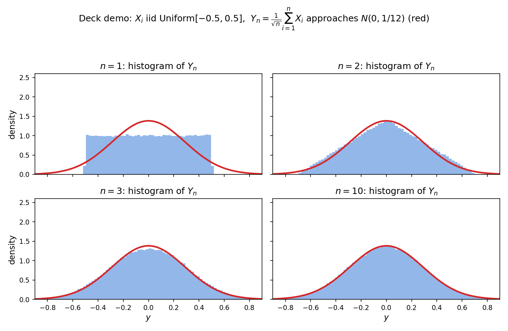

21. Inequalities and the central limit theorem
Chapter 19 defined the normal family and Chapter 20 showed how to estimate its parameters from data — and both chapters ended with a promise: Chapter 21 explains why the normal deserves all that attention. This chapter keeps it. It is also the finale of Part II, so it answers the last two questions probability owes us: how far can a random variable stray from its mean? (Markov’s and Chebyshev’s inequalities — tail bounds) and what happens to averages when you have a lot of data? (the weak law of large numbers and the central limit theorem — the two limit theorems of the course). All of it comes from the MLF Week 12 lecture on “Laws of large numbers: Markov, Chebyshev, Hoeffding, Central limit”.
21.1 The two questions
- Tail bounds. Given a random variable, how far can it be from its mean? The mean (§15.7) is the center of mass of the distribution — but a center of mass tells you nothing about how far out the mass can sit. Markov’s inequality (§21.2) and Chebyshev’s inequality (§21.3) bound the probability of large deviations using only the mean, or the mean and variance.
- Limit theorems. Take \(n\) i.i.d. draws (§20.1) and average them. The weak law of large numbers (§21.5) says the average converges to the true mean — in the convergence in probability sense of §21.4. The central limit theorem (§21.6) says something stronger and stranger: the fluctuations of that average around the mean, scaled up by \(\sqrt{n}\), look normal — no matter what distribution the draws came from.
Note. The lecture also names Hoeffding’s inequality — an exponential-rate bound for the sample mean that needs the extra assumption that the variables are bounded. It is stated, not proved, in the lecture, and this chapter treats it the same way: a pointer in §21.5’s note, not a theorem. The strong law of large numbers (convergence almost surely) is likewise outside this chapter’s scope — the lecture explicitly sets it aside.
21.2 Markov’s inequality
Def. \(X\) is a positive random variable if it takes no negative values: \(X \ge 0\) (the lecture: “we cannot take negative values”).
Theorem (Markov’s inequality). Let \(X\) be a positive random variable with \(E[X] = \mu\) (finite). For any \(t > 0\), \[\boxed{P(X \ge t) \le \frac{E[X]}{t}}.\]
Proof (the lecture’s, for the continuous case — it holds for discrete \(X\) too). Write the expectation as an integral and split it at \(t\): \[E[X] = \int_{0}^{\infty} x\,f_X(x)\,dx = \int_{0}^{t} x\,f_X(x)\,dx + \int_{t}^{\infty} x\,f_X(x)\,dx.\] The first integral is non-negative (\(x \ge 0\), \(f_X \ge 0\)), so dropping it only makes the right side smaller: \[E[X] \ge \int_{t}^{\infty} x\,f_X(x)\,dx.\] On \([t, \infty)\) we have \(x \ge t\), so replace \(x\) by the smaller \(t\) (again shrinking the right side): \[E[X] \ge t\int_{t}^{\infty} f_X(x)\,dx = t\,P(X \ge t),\] since \(\int_{t}^{\infty} f_X = P(X \ge t)\). Rearranging gives the inequality. ∎
Note (when it is vacuous). If \(t \le \mu = E[X]\), the bound is \(E[X]/t \ge 1\) — and every probability is \(\le 1\) anyway, so the inequality says nothing. It only bites for \(t > \mu\) (the lecture’s “meaningful only for \(t\) greater than or equal to the mean”).
eg 1 (the lecture’s example). \(X\) measures something in meters, \(E[X] = 10\). What is \(P(X \ge 50)\)? Markov says immediately, with no other information: \[\boxed{P(X \ge 50) \le \frac{10}{50} = \frac{1}{5} = 20\%}.\] There is only a 20% chance of exceeding 50 meters — from the mean alone.
eg 2 (the bound is tight — the lecture’s discrete example). Let \(X\) take only two values: \(P(X = 0) = 4/5\), \(P(X = 50) = 1/5\). Then \[E[X] = 0\cdot\tfrac45 + 50\cdot\tfrac15 = \boxed{10}, \qquad P(X \ge 50) = \boxed{\tfrac15}.\] Markov predicts \(P(X \ge 50) \le 10/50 = 1/5\) — and the true probability is exactly \(1/5\). Given only the mean, you cannot do better than Markov: this distribution shows the bound is the best possible in general. (Problem 9 generalizes this construction.)
Basically, … Markov = “if the average is \(\mu\), then being \(k\) times the average can happen at most \(1/k\) of the time”. The proof’s whole idea: the expectation is an integral; throw away the part below \(t\); on the part above \(t\), every \(x\) is at least \(t\), so the leftover integral is at least \(t \times\) (probability of being above \(t\)). And the two-point example shows you can’t sharpen it without more information — the mean alone only buys you this much.
21.3 Chebyshev’s inequality
Markov needs a positive \(X\) and bounds a one-sided tail. Chebyshev drops the positivity requirement and bounds the two-sided deviation from the mean, using one more piece of information: the variance (§15.9).
Theorem (Chebyshev’s inequality). Let \(E[X] = \mu\) and \(\mathrm{Var}(X) = \sigma^2\) (finite). For any \(t > 0\), \[\boxed{P(|X - \mu| \ge t) \le \frac{\sigma^2}{t^2}}.\]
Proof (the lecture’s — one line, via Markov). The event \(\{|X-\mu| \ge t\}\) is the same as \(\{(X-\mu)^2 \ge t^2\}\), and \((X-\mu)^2\) is a positive random variable, so Markov applies to it: \[P(|X - \mu| \ge t) = P\big((X-\mu)^2 \ge t^2\big) \le \frac{E[(X-\mu)^2]}{t^2} = \frac{\sigma^2}{t^2},\] since \(E[(X-\mu)^2]\) is exactly the variance. ∎
- No positivity needed. The lecture stresses this: \(X\) may take negative values — squaring makes \((X-\mu)^2\) positive, which is all Markov needs. Markov is the one-sided, mean-only bound; Chebyshev is the two-sided, mean-and-variance bound.
- The \(k\sigma\) form. Put \(t = k\sigma\) (\(k > 0\)): then \(\sigma^2/t^2 = 1/k^2\), so \[\boxed{P(|X - \mu| \ge k\sigma) \le \frac{1}{k^2}}.\] The probability of being \(k\) standard deviations from the mean is at most \(1/k^2\) — for any distribution with a variance.
eg 3 (the practice assignment’s Q8). For any \(X\) with mean \(\mu\) and standard deviation \(\sigma\), \[\boxed{P(|X - \mu| \ge 2\sigma) \le \frac{1}{4}} \quad \text{hence} \quad \boxed{P(|X - \mu| < 2\sigma) \ge \frac{3}{4}}.\] Three-quarters of any distribution’s mass lies within two standard deviations of its mean — no shape assumed.
Basically, … Chebyshev = “the variance controls the tails: straying \(k\) standard deviations out happens at most \(1/k^2\) of the time”. The proof is a trick worth memorizing: square the deviation so Markov applies, and the numerator becomes the variance by definition. Whenever a problem asks “how far from the mean”, and you know the variance, reach for Chebyshev.
21.4 Two ways a sequence of random variables can converge
Before the limit theorems, the lecture fixes the vocabulary — “random variables are not real numbers, they are functions from \(\Omega\) to \(\mathbb{R}\), so can we have notions of convergence?” Two of them (a third, convergence almost surely, is stronger; the lecture names it and moves on).
Def (convergence in probability). \(X_n \xrightarrow{p} X\) if, for every fixed \(\varepsilon > 0\), \[\boxed{\lim_{n\to\infty} P(|X_n - X| \ge \varepsilon) = 0}.\] Fix any (nonzero) tolerance \(\varepsilon\); the probability of missing it by more than \(\varepsilon\) dies out as \(n\) grows.
Def (convergence in distribution). \(X_n \xrightarrow{d} X\) if their CDFs (§15.5, §16.4) match in the limit: \[\boxed{\lim_{n\to\infty} F_{X_n}(x) = F_X(x) \quad \text{for all } x}.\] Only the distributions have to line up — the random variables themselves need not get close to each other.
- Hierarchy. Convergence in probability implies convergence in distribution, but not conversely (the lecture). In-distribution is the weaker claim: it is about histograms lining up, not about \(X_n\) pinning down \(X\).
- Why the distinction matters. The weak law (§21.5) ends at a constant \(\mu\) — convergence in probability is the natural language. The CLT (§21.6) ends at a distribution \(N(0, \sigma^2)\) — convergence in probability cannot even be stated there (a distribution is not a number to get close to), so the theorem uses convergence in distribution.
Basically, … Convergence in probability = “the random variable itself settles down onto a target”. Convergence in distribution = “only its shape settles down — the histogram freezes, even though each draw is still random”. The law of large numbers is the first kind; the central limit theorem is the second.
21.5 The weak law of large numbers
Def (sample mean). For \(X_1, \ldots, X_n\) i.i.d. (§20.1), \(\boxed{\bar{X}_n = \frac{1}{n}\sum_{i=1}^{n} X_i}\) — the empirical average, itself a random variable.
You already suspect \(\bar{X}_n\) should sit near \(\mu = E[X_1]\). The weak law makes it precise.
Theorem (weak law of large numbers). Let \(X_1, X_2, \ldots\) be i.i.d. with \(E[X_i] = \mu\). Then \[\boxed{\bar{X}_n \xrightarrow{p} \mu} \qquad \text{i.e.} \qquad \lim_{n\to\infty} P(|\bar{X}_n - \mu| \ge \varepsilon) = 0 \;\; \forall\, \varepsilon > 0.\]
Proof (the lecture’s, under one extra assumption: the variance is finite, \(\mathrm{Var}(X_i) = \sigma^2 < \infty\)). Two facts about \(\bar{X}_n\): - \(E[\bar{X}_n] = \frac{1}{n}\sum E[X_i] = \mu\) (linearity of expectation, §15.8). - \(\mathrm{Var}(\bar{X}_n) = \frac{1}{n^2}\sum_{i=1}^n \mathrm{Var}(X_i) = \frac{\sigma^2}{n}\) — independence makes the variance of the sum the sum of the variances (§17.11), and the \(1/n\) factor squares (§15.9’s corollary).
Apply Chebyshev (§21.3) to the random variable \(\bar{X}_n\): \[P(|\bar{X}_n - \mu| \ge \varepsilon) \le \frac{\mathrm{Var}(\bar{X}_n)}{\varepsilon^2} = \frac{\sigma^2}{n\varepsilon^2} \xrightarrow[n\to\infty]{} 0. \quad ∎\]
Note (the assumptions, and Hoeffding). The lecture flags three things. First, the proof assumed finite variance — the theorem is true without it, but that proof is harder. Second, Chebyshev’s bound dies only as \(1/n\): doubling \(n\) from \(10\) to \(100\) cuts the bound from \(\sim 1/10\) to \(\sim 1/100\). The true concentration of \(\bar{X}_n\) is far faster — exponential in \(n\) — and Hoeffding’s inequality captures that, but it demands the stronger assumption that each \(X_i\) is bounded in \([a,b]\): \[\boxed{P(|\bar{X}_n - \mu| \ge \varepsilon) \le 2\exp\!\left(-\frac{2n\varepsilon^2}{(b-a)^2}\right)} \qquad \text{(Hoeffding — stated, not proved).}\] The lecture does not prove it; neither does this chapter. Third, boundedness is strictly stronger than finite variance: a normal has \(\sigma^2 = 1\) but is unbounded — Hoeffding cannot touch it, which is why the lecture proves the weak law with Chebyshev instead.
eg 4 (how slow is \(1/n\)? — the lecture’s comparison, made numeric). Chebyshev says \(P(|\bar{X}_n - \mu| \ge \varepsilon) \le \sigma^2/(n\varepsilon^2)\). Suppose you want this \(\le 0.01\) at tolerance \(\varepsilon = 0.1\sigma\): \[\frac{\sigma^2}{n(0.1\sigma)^2} \le 0.01 \;\Rightarrow\; \frac{100}{n} \le 0.01 \;\Rightarrow\; \boxed{n \ge 10{,}000}.\] Ten thousand samples for a 99%-confidence, tenth-of-a-standard-deviation guarantee — Chebyshev’s rate is honest but weak. (Problem 6.) The lecture’s point: the bound is valid, the reality (Hoeffding’s exponential rate) is much better.
Basically, … The weak law = “averages work”. Flip a coin \(n\) times and the fraction of heads will get arbitrarily close to the true bias — not certainly for any fixed \(n\), but with probability tending to \(1\) as \(n\) grows. The proof is Chebyshev applied to the average itself, using the one miracle fact \(\mathrm{Var}(\bar{X}_n) = \sigma^2/n\): averaging \(n\) independent copies shrinks the variance by \(n\). That \(1/n\) shrinkage is the whole engine — and it is also why the lecture’s exponential-rate refinement (Hoeffding) needs bounded variables.
21.6 The central limit theorem
Same setup as the weak law — \(X_1, X_2, \ldots\) i.i.d., \(E[X_i] = \mu\), \(\mathrm{Var}(X_i) = \sigma^2\) — but a different question. The weak law asks where the average settles (\(\mu\)). The CLT asks: zoom in on the fluctuations around \(\mu\) — what do they look like?
Def. \(\boxed{Y_n = \frac{1}{\sqrt{n}}\sum_{i=1}^{n}(X_i - \mu)}\) — a scaled sum. Compare with the sample mean \(\bar{X}_n = \frac{1}{n}\sum X_i\): the CLT’s \(Y_n\) uses \(1/\sqrt{n}\), not \(1/n\) (and centers each term at \(\mu\)).
Theorem (central limit theorem — quoted, not proved). The lecture states it without proof: \[\boxed{Y_n \xrightarrow{d} N(0, \sigma^2)}.\] The scaled sum converges in distribution to a normal with mean \(0\) and variance \(\sigma^2\) — the variance of the original \(X_i\)’s, whatever distribution they came from.
Corollary (the standardized form). Since \(Y_n = \sqrt{n}\,(\bar{X}_n - \mu)\), \[\boxed{Z_n = \frac{\bar{X}_n - \mu}{\sigma/\sqrt{n}} = \frac{Y_n}{\sigma} \xrightarrow{d} N(0, 1)}.\] Equivalently, for large \(n\): \(\boxed{\bar{X}_n \;\dot\sim\; N\!\left(\mu, \frac{\sigma^2}{n}\right)}\) — the sample mean is approximately normal, centered at the true mean, with the \(1/n\)-shrunk variance of §21.5.
Note (why \(\sqrt{n}\), not \(n\)). Compute \(\mathrm{Var}(Y_n)\): by independence (§17.11), \(\mathrm{Var}\big(\sum (X_i-\mu)\big) = n\sigma^2\), and the \(1/\sqrt{n}\) factor squares to \(1/n\) (§15.9): \[\mathrm{Var}(Y_n) = \frac{1}{n}\cdot n\sigma^2 = \boxed{\sigma^2} \quad \text{for every } n.\] The \(\sqrt{n}\) scaling is the one scaling that keeps the variance constant — the fluctuations neither collapse to a point (as with \(1/n\), the weak law’s scaling, where \(\mathrm{Var} \to 0\)) nor blow up (as with no scaling). It is a microscope tuned exactly to the scale where the shape of the randomness stays visible. And that shape is always the bell curve.
Note (a limit theorem, but an early one). The CLT is a statement about \(n \to \infty\), yet the lecture stresses it “begins to hold even for \(n\) in the range of \(10\) to \(20\)” — §21.7’s demo shows \(n = 10\) already looking normal.
Basically, … WLLN = “the average converges to the mean” (the location). CLT = “blow up the wiggles around the mean by \(\sqrt{n}\) and they look like a bell curve” (the shape). The \(\sqrt{n}\) is a zoom level: zoom out (\(1/n\)) and the wiggles vanish into the mean — that’s the weak law; don’t zoom at all and they explode; zoom by exactly \(\sqrt{n}\) and the wiggles freeze into a normal distribution. Any starting distribution — uniform, Bernoulli, anything with a variance — ends up at the same bell curve. That is why the normal is everywhere (§21.9).
21.7 Worked: the deck’s uniform demo
The lecture’s own illustration. Take \(X_i\) i.i.d. \(\mathrm{Uniform}[-0.5, 0.5]\) — flat, about as non-normal as possible. Then \(\mu = E[X_i] = 0\) and \(\sigma^2 = (1)^2/12 = 1/12\) (§16.7), so the CLT predicts \(Y_n = \frac{1}{\sqrt{n}}\sum_{i=1}^n X_i \xrightarrow{d} N(0, 1/12)\).

- \(n = 1\): \(Y_1 = X_1\) — just the flat uniform histogram. No normality at all.
- \(n = 2\): \(Y_2 = (X_1 + X_2)/\sqrt{2}\) — the histogram turns triangular (the sum of two uniforms is triangular; the \(1/\sqrt{2}\) only rescales).
- \(n = 3\): a rounded, piecewise-quadratic hump — visibly bell-ish.
- \(n = 10\): the histogram sits almost exactly on the red \(N(0, 1/12)\) curve. Ten uniforms in, bell curve out — the lecture’s “even \(n = 10\) to \(20\)” claim, verified.
eg 5 (reading the limit off the figure). The red curve is \(N(0, 1/12)\): standard deviation \(1/\sqrt{12} \approx 0.289\). At \(n = 10\) the histogram’s peak height is \(\approx 1.38\) — and the normal peak is \(1/(\sigma\sqrt{2\pi}) = 1/(0.289\cdot 2.507) \approx 1.38\) ✓. The variance stayed \(\sigma^2 = 1/12\) at every \(n\) (the §21.6 calculation) — only the shape changed, from flat to bell.
21.8 Worked: CLT approximation for a binomial
The most-used CLT calculation in practice: a count is a sum of indicators (§15.12), so counts are approximately normal.
Setup. Flip a fair coin \(100\) times; \(X\) = number of heads. Write \(X = \sum_{i=1}^{100} X_i\) with \(X_i \sim \mathrm{Bernoulli}(1/2)\) i.i.d. (§15.11): \(E[X_i] = 1/2\), \(\mathrm{Var}(X_i) = 1/4\). Hence \(E[X] = 100\cdot\frac12 = 50\), \(\mathrm{Var}(X) = 100\cdot\frac14 = 25\) (§17.11), \(\sigma_X = 5\).
CLT approximation. For \(n = 100\) (large), \(X \;\dot\sim\; N(50, 25)\): \[P(X \ge 60) \;\approx\; P\!\left(Z \ge \frac{60 - 50}{5}\right) = 1 - \Phi(2) \approx 1 - 0.97725 = \boxed{0.0228},\] using the \(\Phi(2)\) table value from §16.9. (No continuity correction — the sources don’t use one; see the review log.)
How good is it? Three ways to bound/estimate the same number.
- Markov (§21.2): \(P(X \ge 60) \le E[X]/60 = 50/60 \approx \boxed{0.833}\). Valid — and useless.
- Chebyshev (§21.3): \(P(X \ge 60) = P(X - 50 \ge 10) \le P(|X-50| \ge 10) \le 25/10^2 = \boxed{0.25}\). Better, still loose.
- Exact (binomial sum, §15.12): \(P(X \ge 60) = \sum_{k=60}^{100}\binom{100}{k}/2^{100} \approx \boxed{0.0284}\).
So: Markov 0.83, Chebyshev 0.25, CLT 0.0228, truth 0.0284. The inequalities are guarantees — always true, often loose. The CLT is an approximation — not guaranteed, but far tighter. That is the practical division of labor in this chapter: bounds when you must be certain, CLT when you want a number.
Note. The CLT approximation is one-sided here only for convenience — \(P(X \le 40) \approx \Phi(-2) = 0.0228\) by symmetry, and two-sided versions work the same way (Problem 8).
Basically, … “100 fair flips, at least 60 heads” ≈ “a normal with mean 50 and sd 5 exceeds 60” = “a standard normal exceeds 2” ≈ 2.3%. The recipe never changes: mean = \(n\mu\), sd = \(\sigma\sqrt{n}\), standardize, look up \(\Phi\). Compare against Markov/Chebyshev to feel the trade: guarantees are loose, approximations are tight.
21.9 Why this matters: the normal’s ubiquity, and the Part II closing shot
- The promise is kept. §19.9(iv), §20.12(iv), and §16.9’s note all pointed here: the CLT is why the normal family deserved two chapters. The lecture’s physical picture: measure a wire’s current with a sensitive ammeter and you get a normal — because the current is the sum of many electrons each moving left or right (a Bernoulli each, §15.11), and a sum of many small independent effects is normal by the CLT. Measurement noise, heights, test scores — whenever the observed quantity is an additive pile-up of small independent contributions, the bell curve appears. “Gaussian” is just the name the pile-up goes by.
- The weak law underwrites all of estimation. Every estimator in Chapter 20 is built from sample averages — \(\hat\mu_{ML} = \bar{x}\) (§20.6), the empirical covariance (§20.7). The weak law is the silent license: those averages converge to the true parameters as \(n\) grows, so more data means better estimates. §20.10’s “lots of data washes the prior out” is the same phenomenon in Bayesian dress.
- What comes next. Part III turns this machinery into machine learning: linear and polynomial regression (Ch 23) inherit §20.8’s “Gaussian noise ⇒ least squares”, and every generalization argument from here on leans on averages concentrating (§21.5) and fluctuations being normal (§21.6).
Part II, in one paragraph. Probability basics (Ch 14): experiments, sample spaces, conditional probability, Bayes. Discrete and continuous random variables (Ch 15–16): PMF/PDF/CDF, expectation, variance, the named distributions — Bernoulli, binomial, geometric, uniform, exponential, normal. Joint distributions (Ch 17–18): two variables at once, independence, covariance, “variances add for independent variables”. Random vectors (Ch 19): the multivariate normal and its parameters \(\boldsymbol{\mu}\), \(\boldsymbol{\Sigma}\) — “everything linear stays normal”. Estimation (Ch 20): MLE picks the parameter that makes the data most likely; MAP adds a prior’s tug; Gaussian noise turns fitting into least squares. Inequalities and limits (this chapter): Markov and Chebyshev bound the tails from the mean and variance alone; the weak law says averages converge to the mean; the central limit theorem says the \(\sqrt{n}\)-scaled fluctuations around it are always normal — which is why the bell curve ran this entire part. With this, Part II’s machinery is complete — Part III builds machine learning on top of it.
Problem set
- (Practice assignment Q1.) A biased coin lands heads with probability \(1/10\); flipped \(200\) times. Use Markov’s inequality to bound \(P(X \ge 120)\), where \(X\) = number of heads. Give the bound as a reduced fraction.
- (Tutorial Q1.) \(X \sim \mathrm{Binomial}(n, p)\). Use Markov’s inequality to bound \(P(X \ge \alpha n)\) where \(p < \alpha < 1\); show the bound is \(p/\alpha\). Evaluate for \(p = 1/2\), \(\alpha = 3/4\).
- (Practice assignment Q2.) \(X \sim \mathrm{Binomial}(n, p)\). Use Chebyshev’s inequality to bound \(P(X \ge \alpha n)\): show \(P(X \ge \alpha n) \le \dfrac{p(1-p)}{n(\alpha-p)^2}\). Evaluate for \(p = 1/2\), \(\alpha = 3/4\), \(n = 8\), and compare with Problem 2’s Markov bound — which is tighter here?
- (Tutorial Q4.) \(X\) has the geometric distribution \(p(x) = 2^{-x}\), \(x = 1, 2, \ldots\) (i) Use Chebyshev to show \(P(|X - 2| \le 2) \ge 1/2\). (ii) Compute the exact \(P(|X - 2| \le 2)\) and compare with the bound.
- Prove the \(k\sigma\) rule from Chebyshev: for \(E[X] = \mu\), \(\mathrm{Var}(X) = \sigma^2\), \(P(|X - \mu| \ge k\sigma) \le 1/k^2\). Then give the lower bound on \(P(|X - \mu| < 3\sigma)\) that holds for every distribution with finite variance.
- \(X_1, \ldots, X_n\) i.i.d. with variance \(\sigma^2\). How large must \(n\) be for Chebyshev to guarantee \(P(|\bar{X}_n - \mu| \ge 0.1\sigma) \le 0.01\)? What does the answer say about Chebyshev’s \(1/n\) rate?
- \(X_1, \ldots, X_{36}\) i.i.d. with \(\mu = 10\), \(\sigma^2 = 4\). (i) State the CLT’s approximate distributions of \(Y_{36}\) and of \(\bar{X}_{36}\). (ii) Approximate \(P(\bar{X}_{36} \ge 10.5)\).
- \(100\) fair coin flips, \(X\) = number of heads. Use the CLT to approximate \(P(X \le 42)\) (standardize and look up \(\Phi\); no continuity correction). The exact binomial value is \(0.0666\) — how far off is the approximation?
- Fix \(\mu > 0\) and \(t > \mu\). Construct a random variable attaining equality in Markov’s inequality: \(P(X = 0) = 1 - \mu/t\), \(P(X = t) = \mu/t\). Verify \(E[X] = \mu\) and \(P(X \ge t) = \mu/t = E[X]/t\).
- Explain in words: the WLLN uses the \(1/n\) scaling and ends at the constant \(\mu\) (convergence in probability); the CLT uses the \(1/\sqrt{n}\) scaling and ends at \(N(0, \sigma^2)\) (convergence in distribution). Why can’t the CLT use \(1/n\)? (Hint: what is \(\mathrm{Var}(\bar{X}_n)\) as \(n \to \infty\), and what does a “distribution” limit with zero variance look like?)
Solutions
Attempt each problem first, then click a problem to reveal its worked solution.
1. \(X\) = heads in \(200\) flips, \(X \sim \mathrm{Binomial}(200, 1/10)\) (§15.12). \(E[X] = np = 200\cdot\frac{1}{10} = 20\). \(X \ge 0\), so Markov (§21.2): \[P(X \ge 120) \le \frac{E[X]}{120} = \frac{20}{120} = \boxed{\frac{1}{6}}.\] (The practice assignment’s answer: A = \(1/6\).)
2. \(X \sim \mathrm{Binomial}(n,p)\) has \(E[X] = np\) (§15.12). Markov (§21.2), with \(t = \alpha n > 0\): \[P(X \ge \alpha n) \le \frac{E[X]}{\alpha n} = \frac{np}{\alpha n} = \boxed{\frac{p}{\alpha}}.\] The condition \(p < \alpha < 1\) makes the bound \(< 1\) (non-vacuous) and \(\alpha n > E[X]\) (the §21.2 note). For \(p = 1/2\), \(\alpha = 3/4\): \[P(X \ge 3n/4) \le \frac{1/2}{3/4} = \frac{2}{3} \approx \boxed{0.667}.\] (The tutorial’s answer: A = \(2/3\).)
3. First shift to a deviation from the mean, then apply Chebyshev (§21.3): \[P(X \ge \alpha n) = P(X - np \ge n\alpha - np) \le P(|X - np| \ge n(\alpha - p)) \le \frac{\mathrm{Var}(X)}{[n(\alpha-p)]^2}.\] The first inequality holds because \(\{X - np \ge t\} \subseteq \{|X-np| \ge t\}\) for \(t = n(\alpha-p) > 0\). With \(\mathrm{Var}(X) = np(1-p)\) (§15.12): \[P(X \ge \alpha n) \le \frac{np(1-p)}{n^2(\alpha-p)^2} = \boxed{\frac{p(1-p)}{n(\alpha-p)^2}}.\] For \(p = 1/2\), \(\alpha = 3/4\), \(n = 8\): \(\alpha - p = 1/4\), \[\frac{(1/2)(1/2)}{8\cdot(1/4)^2} = \frac{1/4}{8/16} = \frac{1/4}{1/2} = \boxed{0.5}.\] (The practice assignment’s answer: \(0.5\), equivalently \(4/n\).) Comparison: Markov (Problem 2) gave \(2/3 \approx 0.667\); Chebyshev gives \(0.5\) — Chebyshev is tighter here, because it exploits the variance, not just the mean.
4. (i) \(p(x) = 2^{-x}\), \(x = 1, 2, \ldots\) is \(\mathrm{Geometric}(1/2)\) (first success on trial \(x\)). From §15.13 (eg 12): \(E[X] = 1/p = \boxed{2}\), \(\mathrm{Var}(X) = (1-p)/p^2 = (1/2)/(1/4) = \boxed{2}\). Chebyshev (§21.3) with \(t = 2\): \[P(|X - 2| \ge 2) \le \frac{2}{2^2} = \frac{1}{2} \quad\Rightarrow\quad \boxed{P(|X - 2| \le 2) \ge 1 - \frac12 = \frac12}.\] (ii) Exact: \(|X-2| \le 2 \iff 0 \le X \le 4\), and \(X \ge 1\) always, so \[P(|X-2| \le 2) = P(X \le 4) = \sum_{k=1}^{4} 2^{-k} = \frac12 + \frac14 + \frac18 + \frac{1}{16} = \boxed{\frac{15}{16} = 0.9375}.\] Comparison: Chebyshev guarantees \(\ge 0.5\); the truth is \(0.9375\). The bound is valid but loose — Chebyshev knows only the mean and variance, and the geometric’s long right tail forces it to be pessimistic.
5. Chebyshev (§21.3): \(P(|X-\mu| \ge t) \le \sigma^2/t^2\). Set \(t = k\sigma\) (\(k > 0\)): \[P(|X - \mu| \ge k\sigma) \le \frac{\sigma^2}{k^2\sigma^2} = \boxed{\frac{1}{k^2}}.\] For \(k = 3\): \(P(|X-\mu| \ge 3\sigma) \le 1/9\), so \(\boxed{P(|X-\mu| < 3\sigma) \ge 1 - 1/9 = 8/9 \approx 0.889}\) — for every distribution with finite variance. (For \(k = 2\) this recovers eg 3’s \(1/4\) / \(3/4\), the practice assignment’s Q8.)
6. Chebyshev on \(\bar{X}_n\) (the §21.5 calculation): \(P(|\bar{X}_n - \mu| \ge 0.1\sigma) \le \dfrac{\sigma^2}{n(0.1\sigma)^2} = \dfrac{100}{n}\). Demand \(\le 0.01\): \[\frac{100}{n} \le 0.01 \;\Rightarrow\; n \ge \frac{100}{0.01} = \boxed{10{,}000}.\] The answer says Chebyshev’s \(1/n\) rate is slow: cutting the tolerance by \(10\) costs \(100\times\) the samples, and cutting the failure probability by \(10\) costs \(10\times\) the samples. The lecture’s point (§21.5 note): the bound is honest, but the true concentration (Hoeffding’s exponential rate, for bounded variables) needs far fewer samples.
7. (i) \(Y_{36} = \frac{1}{\sqrt{36}}\sum_{i=1}^{36}(X_i - 10) \xrightarrow{d} N(0, \sigma^2) = \boxed{N(0, 4)}\) (§21.6). Equivalently (§21.6 corollary), \[\bar{X}_{36} \;\dot\sim\; \boxed{N\!\left(10,\ \frac{4}{36}\right) = N(10,\ 1/9)}, \qquad \text{sd} = \frac{2}{6} = \frac13.\] (ii) Standardize: \[P(\bar{X}_{36} \ge 10.5) \approx P\!\left(Z \ge \frac{10.5 - 10}{1/3}\right) = P(Z \ge 1.5) = 1 - \Phi(1.5) \approx 1 - 0.93319 = \boxed{0.0668}.\]
8. \(X = \sum_{i=1}^{100} X_i\), \(X_i \sim \mathrm{Bernoulli}(1/2)\): \(E[X] = 50\), \(\mathrm{Var}(X) = 25\), sd \(= 5\) (§21.8 setup). CLT: \(X \;\dot\sim\; N(50, 25)\): \[P(X \le 42) \approx P\!\left(Z \le \frac{42-50}{5}\right) = \Phi(-1.6) = 1 - \Phi(1.6) \approx 1 - 0.94520 = \boxed{0.0548}.\] Exact binomial value: \(0.0666\). Error: \(|0.0666 - 0.0548| = 0.0118\) — about \(1.2\) percentage points, i.e. the CLT is off by \(\approx 18\%\) relative. Decent for \(n = 100\) with no continuity correction; it improves as \(n\) grows. (The CLT is an approximation, not a bound — §21.8.)
9. \(E[X] = 0\cdot P(X=0) + t\cdot P(X=t) = 0\cdot(1-\mu/t) + t\cdot(\mu/t) = \boxed{\mu}\). And \(P(X \ge t) = P(X = t) = \boxed{\mu/t} = E[X]/t\) — equality in Markov (§21.2). Conditions: \(\mu > 0\), \(t > \mu\) ensure \(0 < \mu/t < 1\), so the probabilities are valid (\(1 - \mu/t > 0\)). This is the general form of eg 2’s \(\{0, 4/5;\ 50, 1/5\}\) example (\(\mu = 10\), \(t = 50\)): no bound using only the mean can beat Markov, because this distribution attains it.
10. The \(1/n\) scaling in \(\bar{X}_n\) averages: \(\mathrm{Var}(\bar{X}_n) = \sigma^2/n \to 0\), so the distribution collapses onto the single point \(\mu\) — the only possible limit of a “distribution” with vanishing variance is a constant, and “convergence to a constant” is convergence in probability (the WLLN). If you fed \(\bar{X}_n\) to the CLT’s machinery instead, you’d get the degenerate claim “\(\bar{X}_n \xrightarrow{d} N(\mu, 0)\)” — a normal with zero variance is just the point \(\mu\) again; all shape information is lost. The CLT’s \(1/\sqrt{n}\) scaling is the unique zoom where \(\mathrm{Var}(Y_n) = \sigma^2\) stays fixed (§21.6 note): the center still converges (that part is the WLLN), but the fluctuations stay visible and converge in distribution to \(N(0,\sigma^2)\). In short: \(1/n\) asks “where does it settle?” (answer: \(\mu\), in probability); \(1/\sqrt{n}\) asks “what do the wiggles look like on the way there?” (answer: normal, in distribution).